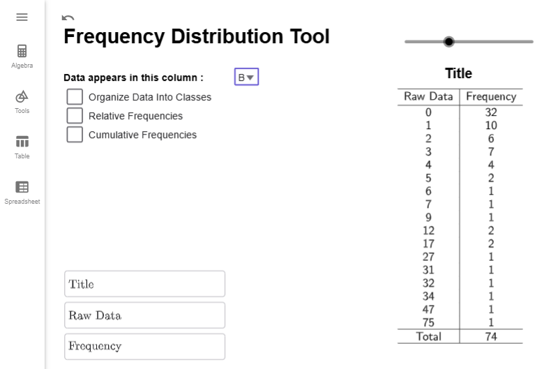
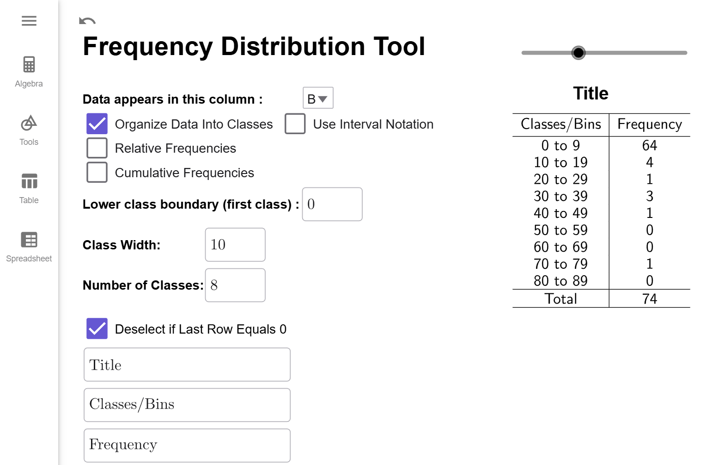
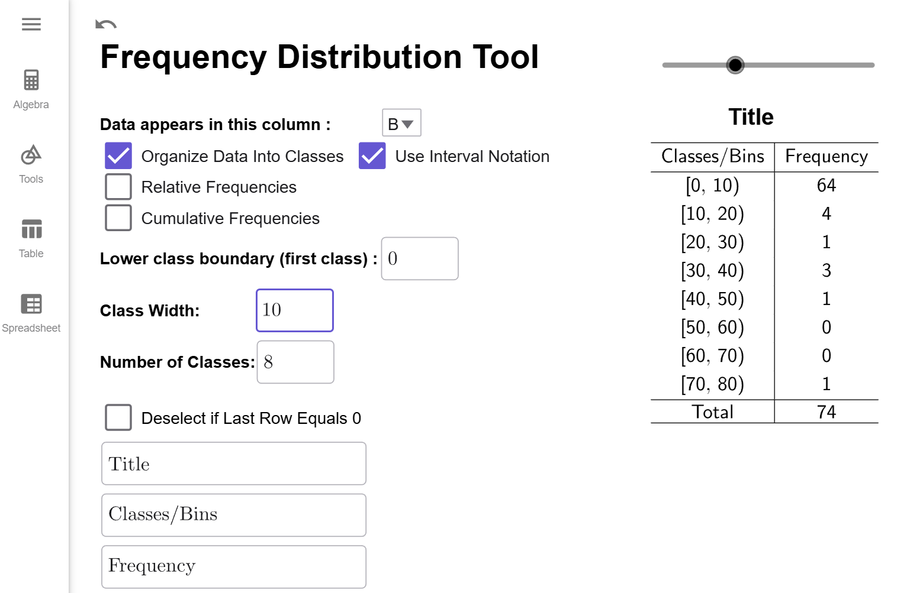
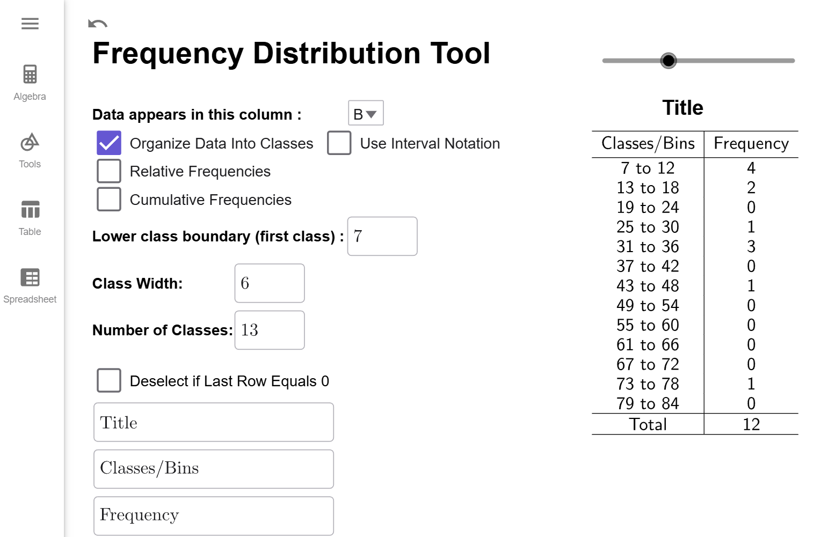

Creating Frequency Distributions
Distributions hold significant theoretical importance in this course. In this section, we will learn about frequency distributions, which is the basis for many of the concepts in this course.
Basics of Frequency Distributions
What is Frequency?
The frequency of a data point is how many times it shows up in the data set.
What is a Frequency Distribution?
A frequency distribution is a table that lists either the raw data or classes (defined below) in the first column and corresponding frequency in the second column.
Before the advent of computers, frequency distributions were created manually. This involved arranging the data in ascending order and marking a tally for each occurrence of a data point. This process was prone to human errors such as miscounting or duplicating data.
With computers, creating frequency distributions is much faster and more accurate than manual methods. Tools like SPSS, MATLAB, and Excel offer advanced statistical capabilities. GeoGebra, however, is particularly useful in educational settings because of its simplicity and visualization tools, making it ideal for students learning this process.
Example
The data on the number of deaths directly caused by tornadoes in Tennessee is given in
the table
below. Create a Frequency Distribution for the number of deaths per year.
| Year | Direct Fatalities | Year | Direct Fatalities | Year | Direct Fatalities | Year | Direct Fatalities |
|---|---|---|---|---|---|---|---|
| 2023 | 17 | 2004 | 0 | 1985 | 0 | 1966 | 0 |
| 2022 | 0 | 2003 | 12 | 1984 | 1 | 1965 | 1 |
| 2021 | 4 | 2002 | 17 | 1983 | 0 | 1964 | 0 |
| 2020 | 27 | 2001 | 3 | 1982 | 0 | 1963 | 4 |
| 2019 | 0 | 2000 | 1 | 1981 | 0 | 1962 | 0 |
| 2018 | 1 | 1999 | 12 | 1980 | 0 | 1961 | 0 |
| 2017 | 0 | 1998 | 7 | 1979 | 2 | 1960 | 0 |
| 2016 | 2 | 1997 | 1 | 1978 | 0 | 1959 | 0 |
| 2015 | 2 | 1996 | 0 | 1977 | 0 | 1958 | 0 |
| 2014 | 2 | 1995 | 3 | 1976 | 0 | 1957 | 0 |
| 2013 | 0 | 1994 | 5 | 1975 | 3 | 1956 | 3 |
| 2012 | 3 | 1993 | 1 | 1974 | 47 | 1955 | 0 |
| 2011 | 32 | 1992 | 1 | 1973 | 1 | 1954 | 0 |
| 2010 | 1 | 1991 | 5 | 1972 | 0 | 1953 | 4 |
| 2009 | 2 | 1990 | 0 | 1971 | 3 | 1952 | 75 |
| 2008 | 31 | 1989 | 1 | 1970 | 3 | 1951 | 0 |
| 2007 | 0 | 1988 | 6 | 1969 | 0 | 1950 | 9 |
| 2006 | 34 | 1987 | 0 | 1968 | 4 |
Solution
First, click on the Copy Data to Clipboard button and a popup should
appear
that indicates the copy was successful.
Next, open the Frequency Distribution Tool by clicking on this
link
or by going to the GeoGebra Tools module and clicking the link provided there.
Once
Frequency Distribution Tool is opened, click on the Spreadsheet tab.
Click on the A1 Cell, and right click to open up
the
Context Menu.
Select Paste from the Menu, and the data will copy into the
spreadsheet. (This may take a moment to load. Please be
patient.)
Notice that the data in which we are interested is
in
column B. Remember this! Click on the Spreadsheet tab to hide the data.
Notice that the tool is set by default to column A. If we click on the dropdown box and select column B, we will get the correct frequency distribution.

Interpretation
The numbers in the Data column represents the number of deaths reported. The numbers in the Frequency column represent the number of years from 1950 to 2023 that reported that many deaths. For example, 10 years between 1950 and 2023 reported 1 death caused by Tornadoes in Tennessee.
Note
The Title and Column headers as customizable. Just click on the corresponding TextBox in the lower right corner, delete the existing text, and enter what you want to appear there. There is also a slider above the title so you can adjust the horizontal positioning of the title.
 with deaths and years columns.")
$$\tag*{\(\blacksquare\)}$$
Frequency Distribution Classes
While the above example works well for small data sets, many frequency distributions group data into ranges instead of listing each unique data point individually. For example, we could group the number of years with 0 to 4 deaths, 5 to 9 deaths, 10 to 14 deaths, and so on, creating a row in the table for each of these ranges. These ranges are called classes or bins in statistics.
If we created a new class for every 5 deaths, we would need 16 classes to cover all the data, from the class with 0 to 4 deaths up to the class with 75 to 79 deaths. However, this approach would lead to many classes with a frequency of 0, which makes the table less meaningful. To avoid this, we want the ranges to be large enough to capture meaningful data but not so small that most classes are empty.
So how many classes should we have? As the researcher, you get to decide, but a good rule of thumb is to aim for 5 to 20 classes. Once the number of classes is chosen, the formula below will help determine the range for each class, known as the class width.
Calculating Class Width?
The class width is the size of each class and determines how data is grouped. It is calculated using the formula \[ \text{class width } = \dfrac{\text{largest value } - \text{smallest value }}{\text{number of classes}}.\]
If the result is a decimal, always round up to the next whole number to ensure all data points fit into the intervals. For example, if the calculated width is 9.38, round it up to 10. This ensures every data point fits into one of the classes without gaps.
What does this number mean?
The class width measures the difference between the smallest numbers in successive classes. For example, if our first class is from 0 to 4 deaths and our second class is from 5 to 9 deaths, then the class width is 5 since \(5-0=5\).
Can I choose my own class width?
Yes! This formula isn't perfect, and occasionally excludes the maximal data point. Sometimes, you have a preferred width you would like to use. It is up to you! For academic purposes though, we will always use the formula unless a problem requires otherwise.
Example
Our data from range from 0 deaths to 75 deaths. Find the class width that you will need if you want 6 classes.
Solution
Using the formula above, we have that \[\begin{align*}\text{class width } = \dfrac{\text{largest value } - \text{smallest value }}{\text{number of classes}}=\dfrac{75-0}{{6}}\approx 12.5\end{align*}\]
Since our output gave use a decimal, we round it up to the next integer. Therefore, our class width will be 13.
$$\tag*{\(\blacksquare\)}$$
Class widths, along with the minimum value of the data set, define what is known as the boundary points of the classes. Boundary points define where one class ends and another class begins.
How do I compute the Boundary Points?
The minimum value is typically the first boundary point. To find the other boundary points, keep adding the class width until you get a value that is larger than (but not equal to) the maximal value in our data set.
For example, if we wanted a class width of 5 for the classes of tornado deaths and we know the lowest value in our dataset is 0 and the largest value is 75, the boundary points would be 0, 5, 10, 15, 20, \(\ldots\), 70, 75, 80.
Can I use a number other than the minimum value for the first Boundary Point?
Yes! If you choose your own class size, typically you also choose the first boundary points as well. Just remember to keep adding the class width until you get a number larger than the largest value in the data set.
Example
Our data from range from 0 deaths to 75 deaths. Suppose you want your boundary points to start at 7 and have class width 10. Find all the boundary points.
Solution
We just start at 7 and keep adding 10 and until we get a number larger than 75. So, the boundary points starting with 5 are \[7,\qquad 17,\qquad 27,\qquad 37,\qquad 47,\qquad 57,\qquad 67,\qquad 77\]
$$\tag*{\(\blacksquare\)}$$
Calculating boundary points and determining the number of classes is straightforward. However, tallying data points in each class can be tedious and error-prone. Instead, we’ll use our GeoGeobra tool to automate the tallying and format it into a table. The next example demonstrates this process.
Example
Using our data from , create a frequency distribution with 8 different classes. Write the resulting frequency distribution in the space below.
Solution
The data from should already be loaded into GeoGebra. If it is not, follow the steps at the beginning of to load the data in and selected option B from the dropbox. Your tool should like this:
The first thing we are going to do is check the Organize Data into Classes checkbox. Multiple new options appear: Lower Class Boundary, Class Width, Number of Classes. (There are other new options; we can ignore them for now.) Notice that the Lower Class Boundary will automatically become the value of the smallest data point; the class width and number of classes will default to preassigned values.
First, we want to calculate the class width. Since we want 8 classes, we will enter that value info class width. Notice that the number of classes will update to 10 since \[\begin{align*}\text{class width }&= \dfrac{\text{largest value } - \text{smallest value }}{\text{number of classes}}\&=\dfrac{75-0}{{8}}\&\approx 9.375\&=10 (\text{rounding up})\end{align*}\]

Now, if you count up the number of classes in the table, notice there is 11 different classes. Why is there 11 when Number of Classes is set to 10? Sometimes, the largest value of the data set gets counted in the last classes when it should not be. It is a quirk of how GeoGebra defined class frequencies. (And there is nothing wrong with that the method GeoGebra uses; it is just uses a slightly different definition of boundary points than was given above.) To correct for this difference, the Frequency Distribution Tool automatically adds an extra class by default. But, notice that the last class has a frequency of 0. That means the extra class wasn't needed, and we can click on the click on the Deselect if Last Row Equals 0 checkbox to remove it. Therefore, we get the following frequency distribution.

Interpretation
The classes/bins column gives the range of values for each class, always including the first number in the range and excluding the last number in the range. For example, the interval 0 to 9 means the range of values starting at 0 and include all the numbers up to but not including 10. The Frequency, as before, tells us the number of years whose number of deaths fell into that range of values. For example, there were 64 years that had 0 up to 10 deaths.
What is the Use Interval Notation Checkbox?
Some instructors/websites prefer to use interval notation to describe the classes/bins. For example, 0 to 9 would be written as $[0,10)$ since $[0$ indicates to start and include 0 and $10)$ means to include all the number up to but not including 10. When the check box is clicked, the frequency distribution looks like this.

For future examples, we will not use interval notation.
$$\tag*{\(\blacksquare\)}$$
Before we close this section out, we will give a demonstration of creating a frequency distribution that starts at a value other than the minimum value of the data set.
Example
Use our data set from to create a frequency distribution that starts at 7 and has a class width of 6.
Solution
The data from should already be loaded into GeoGebra. If it is not, follow the steps at the beginning of to load the data in and selected option B from the dropbox. Your tool should like this if you've been doing all the examples in order on this page:
All we need to do enter 7 for the Lower Class Boundary and 8 for the Class Width. Notice the Number of Classes will update to 10 since Since we want 8 classes, we will enter that value info class width. Notice that the number of classes will update to 10 since \[\begin{align*}\text{number of classes}&= \dfrac{\text{largest value } - \text{smallest value }}{\text{class width}}\&=\dfrac{75-0}{{6}}\&\approx 12.5\&=13 (\text{rounding up})\end{align*}\]

⚠️ Warning ⚠️
Notice there are 13 classes, and each has a class width of 6. But, notice that the last class has a 0 in it. The best Frequency Distributions always have a non-zero frequency for the first and last class. Also, notice we missed all the years that had fewer than 7 deaths. So, while this is a correctly constructed Frequency Distribution, it is also a bit misleading.
That is why it is better to let the Lower Boundary be the minimum value of the dataset. We get all the data, and our first and last classes will be a non-zero frequency ensuring that our table is just the right size for the number of classes or class width we desire.